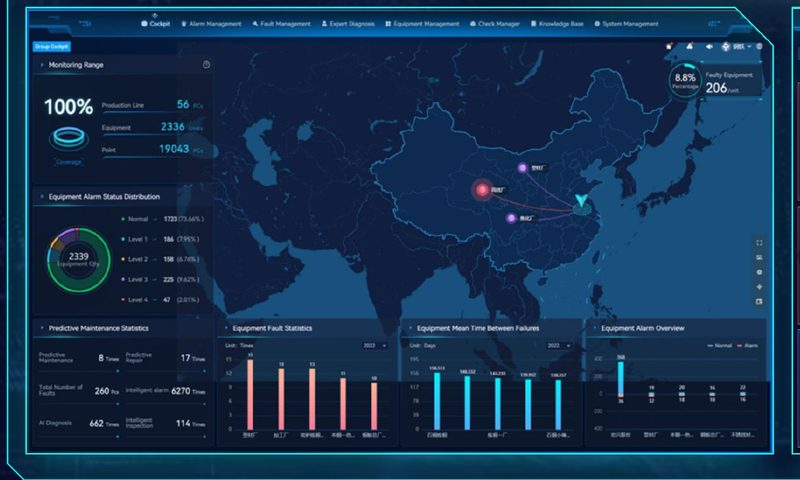
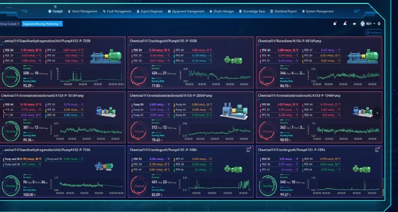

Промышленный мониторинг и предиктивное обслуживание оборудования ГОК

Измеримые результаты предиктивного обслуживания
отказов механического оборудования
Данные подтверждены на основе анализа 34 000+ успешных кейсов в горнодобывающей отрасли.
времени простоя из-за механических отказов
Данные подтверждены на основе анализа 34 000+ успешных кейсов в горнодобывающей отрасли.
затрат на аутсорсинг технического обслуживания
Данные подтверждены на основе анализа 34 000+ успешных кейсов в горнодобывающей отрасли.
ООО «Алгоритм» — ваш партнер в цифровизации промышленности
Мы предлагаем полный цикл внедрения систем прогнозного технического обслуживания: от аудита оборудования и подбора аппаратных решений до развертывания программного обеспечения и обучения персонала.
Индивидуальный подход
Адаптируем решения под специфику конкретного предприятия и отрасли.
Экспертная поддержка
Обеспечиваем консалтинг и сопровождение на всех этапах жизненного цикла системы.
Мировые стандарты
Опираемся на проверенную технологическую базу, успешно зарекомендовавшую себя на крупнейших промышленных объектах.
Масштаб и технологическая база платформы
Масштаб внедрения
стран — география работы технологической платформы на крупнейших промышленных объектах мира
единиц оборудования находится под непрерывным онлайн-мониторингом платформы
успешно установленных и работающих датчиков вибрации и температуры
данных телеметрии обрабатывается интеллектуальными ИИ-алгоритмами ежедневно
Научный потенциал платформы
команды — доля специалистов НИОКР (R&D) в общей численности персонала платформы
патентов и зарегистрированных прав на собственное программное обеспечение и аппаратные решения
сотрудников — общий штат экосистемы платформы, включая сильную команду инженеров-диагностов
национальных стандарта, разработанных на базе технологии, включая стандарты техобслуживания оборудования
Диагностируемое вращающееся оборудование
Мельницы
Шаровые и полуавтоматические мельницы
Компрессоры
Винтовые и воздушные компрессоры
Насосы
Шламовые и центробежные насосы
Конвейеры
Ленточные конвейеры и приводы
Подъёмные машины
Шахтные подъёмные установки
Вентиляторы
Вентиляторы главного проветривания
Дробилки
Щековые, конусные, роторные дробилки
Мостовые краны
Грузоподъёмное оборудование
Прокатные станы
Металлургическое оборудование
Прочее
Ж/д транспорт, ЦБП, винодельческое и медицинское оборудование
Архитектура системы: надёжная передача данных и гибкая интеграция
Локальный сервер предприятия (On-Premise) / облачный сервер
Обеспечивает 100% безопасность данных внутри закрытого периметра завода или гибкий доступ через облако.
Программный комплекс SuperCare
Интеллектуальный центр анализа больших данных и ИИ-диагностики.
Интеграция в локальную сеть предприятия (LAN / ВОЛС)
Передача данных на сервер по защищённым промышленным протоколам.
Вариант 1. Высокоскоростной проводной сбор (кабель / оптика / Wi-Fi)
Для оборудования: критически важные и энергонасыщенные агрегаты с постоянным питанием — дробилки, главные приводы, масляные прессы.
Вариант 2. Беспроводная сеть малой дальности (ZigBee)
Для оборудования: компактные узлы и конвейерные линии на средних дистанциях — шахтные подъёмники, скребки, сушильные барабаны.
Вариант 3. Дальнобойная беспроводная сеть (LoRa / 4G / 5G)
Для оборудования: удалённые объекты в радиусе до 1 км без прокладки кабельных трасс — воздуходувки, насосные станции, компрессоры.
Беспроводной вариант решения
| Оборудование | Датчиков | Тип датчика | Тип шлюза |
|---|---|---|---|
| Консольный насос | 4 | RH505 | RH560 |
| Двухопорный насос | 6 | RH605 | RH560 |
| Вентилятор | 6 | RH506 | RH570 |
Одноосные и трёхосные беспроводные датчики вибрации (RH505/RH605, RW506/RW606) передают данные на шлюз RONDS по радиоканалу — без прокладки кабельных трасс.
🛠️ Монтаж за 15 минут
Одноосные и трёхосные датчики вибрации фиксируются на оборудовании с помощью шпилек, магнитов или промышленного клея. Никаких кабельных трасс и штробления.
🔋 До 3 лет автономной работы
Датчики оснащены встроенными промышленными батареями повышенной ёмкости. Замена элементов питания производится быстро и не требует демонтажа самого датчика.
📡 Помехозащищённый радиоканал
Данные передаются на промышленный шлюз в автоматическом режиме. Система устойчива к электромагнитным помехам от мощных электродвигателей.


Проводной вариант решения
| Оборудование | Датчиков | Тип датчика | Тип шлюза |
|---|---|---|---|
| Горизонтальная дробилка | 10 | RH103T | RH2000 |
| Вертикальная дробилка | 16 | RH104T | RH2000 |
| Зубчатая дробилка | 13 | RH113T | RH2000 |
Проводные датчики с верхним или боковым (360°) выходом кабеля подключаются к шлюзу RH2000 — стационарная схема для ответственных агрегатов с постоянным питанием.
⚡ Постоянное питание и непрерывный сбор
Стационарная схема с подключением к шлюзу RH2000 обеспечивает ежесекундный мониторинг без задержек. Идеально для агрегатов класса «А», где секунда простоя стоит миллионы рублей.
🛡️ Защита кабеля на 360°
Проводные датчики поставляются с верхним или боковым выходом кабеля в металлической бронерукаве. Система полностью защищена от механических повреждений кусками руды, пыли, влаги и вибрации.
🎯 Анализ переходных процессов
Проводная схема позволяет ловить дефекты в моменты пуска и останова агрегата, когда нагрузка на подшипники и редукторы максимальна.


От аномалии до устранения дефекта — за 5 часов

Внезапный скачок вибрации
Телеметрия в реальном времени зафиксировала резкое аномальное усиление вибрации на двигателе работающего под землёй погрузчика. Система автоматически отправила сигнал тревоги.

Мгновенный экспертный анализ
Дежурный эксперт удалённого диагностического центра проанализировал спектр волны и выдал заключение инженеру ГОКа: «Критический дефект подшипника. Риск заклинивания двигателя».

Точечный плановый ремонт
Бригада заехала в шахту и оперативно заменила повреждённый узел. Сепаратор подшипника был полностью разрушен — до заклинивания и пожара оставались считанные часы.

Возврат в штатный режим
После замены подшипника форма волны и графики вибрации мгновенно вернулись к норме. Погрузчик запущен в работу.
Предотвращено внезапное аварийное отключение, исключены миллионные экономические потери от простоя линии и ликвидирована угроза нарушению техники безопасности (ТБ) под землёй.
Как сократить простои и затраты на контроле оборудования в открытом карьере
Программные решения для предиктивного технического обслуживания
SuperCare — платформа предиктивного обслуживания

Архитектура больших данных
Удовлетворяет потребности для долгосрочного использования в будущем
B/S структура
Совместима с различными браузерами, не требует установки
Самоопределяемое размещение
Быстрая настройка макета страницы под стилевые требования
Профессиональная версия Pro
Унифицированный и централизованный контроль верхней группы предприятий
Статистические таблицы
Глубокая аналитика по всем предприятиям для руководителя
Совместимость
Интеграция с DCS/PLC/MES/SCADA и другими системами
Сервисы для обеспечения предиктивного технического обслуживания
Международный опыт применения технологии
ООО «Алгоритм»
Комплексные решения для предиктивного обслуживания оборудования.
ул. Маерчака, д. 8, офис 318